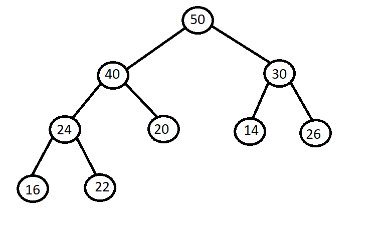
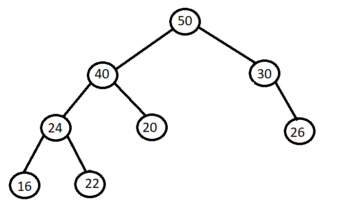
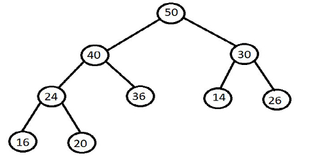
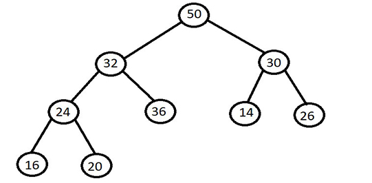
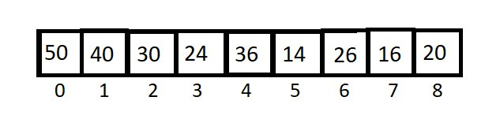
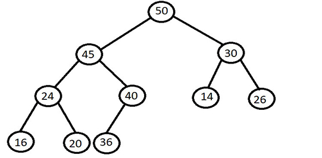
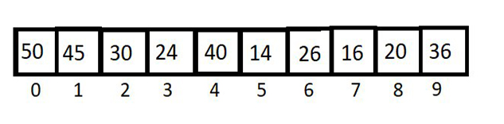
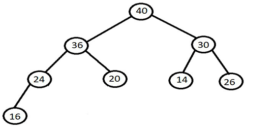
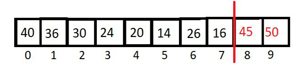
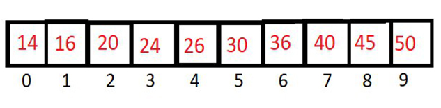

Heap sort is a comparison-based sorting technique based on Binary Heap data structure. It is similar to selection sort where we first find the minimum or maximum element and place that element at the beginning. We repeat the same process for the remaining elements.
To understand Binary Heap we have to use a complete binary tree
A complete binary tree is a binary tree in which every level, except possibly the last, is completely filled, and all nodes are as far left as possible.
For example this is a complete binary tree-
In this tree level 1 ,2 & 3 are completely filled with nodes and in level 4 the nodes are not completely filled but they are present at most left side of the tree so it is a complete binary tree.
But, this is not a complete binary tree-
As we can see that, in level 3 left child of node with element 30 is missing.
Let's understand what a Binary Heap is.
A Binary Heap is a Complete Binary Tree where items are stored in a special order such that the value in a parent node is greater(or smaller) than the values in its two children nodes. The former is called max heap and the latter is called min-heap. The heap can be represented by a binary tree or array.
We will work on max heap by getting the maximum element from our heap, similarly like max heap we can also create min heap also.
Our max heap looks like this -
Note that every element present at any node is greater than its child, so it follows our max heap.
But in the above tree as we can see at 2nd level node with value 32 is less than its right child, so it is not a max heap.
To represent our complete tree in an Array is very simple we just fill the elements at our node in array in level order, so at every level we will move left to right and fill our array.
Our array will look like this after fill all the nodes -
For every index 'i' in our Array its child can be found at (2*i + 1) and (2*i + 2), where former refrences to left child while later refrences to right child of that node.
For example, for element 30 at i=2 , its child will be at (2*2 + 1) and (2*2 + 2) which is index 5 and 6, and elements at index 5 and 6 are 14 and 26 which we can confirm from our Binary Heap
We saw earlier what a binary heap is, now we will see how to create that binary heap.
The function we use to create our desired heap is called heapify,
in this we maintain our elements such that our heap forms a binary heap.
We perform main two functions on our heap , which is insertion and deletion of an element.
When we add a new element in our heap , our heap will be disoriented and it may not follow binary heap. So we need to change our elements position such that it follows binary heap.
Let's say we are inserting an element 45 in our heap.
To do that we need to insert it at the end of the heap such that it follows complete binary
tree.
And in an Array we can store it after the last index.
So after inserting our tree and array will look like this -
But now it does not follws binary heap, so we compare our element with its parent and swap the
positions
if our element is greater than its parent,
So in this as 45 is greater that 36 so they will swap position and
45 will check with 40 and as 45 is still greater so they will swap position.
Now 45 will check with 50 but as 45 is less than 50 so they will not swap and we will have our
binary tree.
So our new binary tree will look like this -
 
In heap we only concern with root element or first element as it gives our desired output,
So to delete we always delete the root.
But after we delete the root it will not follow binary heap and will look like this -
Now we will replace our current root with the last
element in our heap,
so now our heap will look like -
But this is not following binary tree,
So we will replace our current element with its larger child and in this case it is 45,
So 45 and 36 will swap position.
And our heap will look like this.
Still it is not following binary heap, so we will swap again with larger child,
so 36 and 40 will swap position.
Now our heapp will look like this.
Note that after deletion in array we had empty space.
To implement Heap Sort we will use that new emoty space to store our element.
So as we deleted 50 we will store that 50 in last index.
Now we will perform deletion again and store the maximum element at new empty space.
It will look something like this.
Now we will perform heapify to create binary heap which will look like this -
 Note that last two elements are sorted in our heap, so we will recusively do these steps again and again till the first element and in the end we will have an sorted array.

// Java program for implementation of Heap Sort
public class HeapSort {
public void sort(int arr[])
{
int n = arr.length;
// Build heap (rearrange array)
for (int i = n / 2 - 1; i >= 0; i--)
heapify(arr, n, i);
// One by one extract an element from heap
for (int i = n - 1; i > 0; i--) {
// Move current root to end
int temp = arr[0];
arr[0] = arr[i];
arr[i] = temp;
// call max heapify on the reduced heap
heapify(arr, i, 0);
}
}
// To heapify a subtree rooted with node i which is
// an index in arr[]. n is size of heap
void heapify(int arr[], int n, int i)
{
int largest = i; // Initialize largest as root
int l = 2 * i + 1; // left = 2*i + 1
int r = 2 * i + 2; // right = 2*i + 2
// If left child is larger than root
if (l < n && arr[l] > arr[largest])
largest = l;
// If right child is larger than largest so far
if (r < n && arr[r] > arr[largest])
largest = r;
// If largest is not root
if (largest != i) {
int swap = arr[i];
arr[i] = arr[largest];
arr[largest] = swap;
// Recursively heapify the affected sub-tree
heapify(arr, n, largest);
}
}
/* A utility function to print array of size n */
static void printArray(int arr[])
{
int n = arr.length;
for (int i = 0; i < n; ++i)
System.out.print(arr[i] + " ");
System.out.println();
}
// Driver code
public static void main(String args[])
{
int arr[] = { 12, 11, 13, 5, 6, 7 };
int n = arr.length;
HeapSort ob = new HeapSort();
ob.sort(arr);
System.out.println("Sorted array is");
printArray(arr);
}
}
Sorted array is
5 6 7 11 12 13